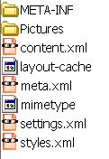

OpenOffice.org et le XML
Vous avez
sans-doute souvent entendu parler du XML, entendu dire que le
format de fichier d'OpenOffice.org était du XML, mais qu'en est-il
exactement et surtout qu'est-ce que cela signifie, qu'est-ce en fin de
compte que le XML ?
Qu'est-ce que le XML ?
Cet
acronyme est l'abréviation de eXtensible Markup Language. En le
traduisant en français, cela voudrait dire "langage à balises
extensibles". Cela ne vous en dit pas beaucoup plus :)
Le XML
fait partie de la classe des métalangages, c'est en fait un
sous-ensemble du SGML. Bon, alors qu'est-ce que le SGML (Standard
Generalized Markup Language) ? C'est un langage qui permet de créer des
documents de façon structurée et modulaire. Concrètement cela veut dire
que vous pouvez créer un document à partir de données aussi
hétéroclites que du son, des données provenant d'une base, ou du texte
et des images. Le SGML a donc été défini pour une large gamme
d'applications et doit être maintenu sur un très long terme. Ce langage
étant assez complet et complexe, le XML a été créé pour simplifier le
SGML.
Ce qui
peut prêter à confusion au premier abord, c'est que le HTML
ressemble beaucoup au XML. C'est un langage avec des balises, qui
s'ouvrent et qui se ferment. Grande différence pourtant, le HTML a été
défini avec des balises qui décrivent la présentation, alors que les
balises du XML, elles, traitent du contenu. Mais oui, le HTML est aussi
un sous ensemble du SGML, mais uniquement pour traiter des données sur
le Web.
Si l'on
se résume, le XML est donc un moyen (et ni un langage de
programmation, ni un nouveau HTML) clair de structurer, décrire et
échanger des données. On sépare le contenu de la forme pour permettre
cet échange. Le contenu pourra alors être réutilisé sous d'autres
formes ou d'autres supports. Les données peuvent être de toutes sortes
: formules chimiques, données financières, données musicales, texte...
L'actualité du xml en France xmlfr.org
Un exemple du
contenu xml d'un
document OOo :
<?xml version="1.0" encoding="UTF-8"?>
<!DOCTYPE office:document-meta PUBLIC "-//OpenOffice.org//DTD
OfficeDocument 1.0//EN" "office.dtd">
<office:meta>
<meta:generator>OpenOffice.org 1.1.1
(Win32)</meta:generator>
<!--645m35(Build:8762)-->
<meta:initial-creator>Sophie Gautier</meta:initial-creator>
<meta:creation-date>2004-05-10T19:07:36</meta:creation-date>
<meta:document-statistic
meta:table-count="0" meta:image-count="31" meta:object-count="0"
meta:page-count="17" meta:paragraph-count="213" meta:word-count="2647"
meta:character-count="16353"/>
</office:meta>
Vous le
voyez les balises <> distinguent le contenu du document.
Une balise ouverte doit toujours être fermée <office:meta> sera
terminé par </office:meta>. Pour ajouter des informations au
document, on lui donne des attributs, toujours accompagnés d'une valeur
: meta:page-count="17". L'attribut meta:page-count a la valeur "17" (le
document a 17 pages). On peut également placer des commentaires comme
ceci : <!--645m35(Build:8762)-->.
Pourquoi choisir le XML ?
Si l'on
regarde le fragment de code XML ci-dessus, il y a quelques
choses qui surprennent :
- le XML est lisible par vous même, mais également par la
machine. C'est un de ses grands avantages.
- Il est unicode (unicode : on définit un nombre unique pour
chaque charactère, quels que soient la plateforme, le langage, le
programme). Cela veut dire qu'il peut être stocké dans différents
encodages. Quelle différence ? Vous savez sans doute que les documents
étaient (sont encore) encodées en ASCII, mais celui-ci ne se rapporte
qu'à un seul alphabet et un seul système d'écriture. Le fragment de
code indique un encodage UTF-8 qui est supporté par bon nombre
d'alphabets.
- le XML est orienté objet : au lieu de décomposer les
données dans des tables normalisées liées par relations, il décrit des
objets (concrets ou abstraits) en modelisant leurs propriétés telles
qu'elles sont, ce qui rend les documents XML plus intuitifs à
comprendre.
- Enfin, le XML distingue le contenu de la forme, la mise en
page des données étant assurée par des langages tiers comme CSS, XSL...
- le XML génère un faible coût au niveau des composants
logiciels, d'où sa bonne intégration dans l'industrie informatique.
Le XML de OOo
Et
comment, à quoi voit-on que OOo est du XML ? OOo a un format de
fichier .xml natif compressé. Cela signifie que les fichiers qui
composent votre document OOo sont encapsulés dans une archive.
Un
exemple : prenez votre dézipeur favorit et ouvrez n'importe quel
fichier .sxw (Writer) avec, voici ce que vous obtenez :

Une
collection de fichiers différents dont certains portent l'extension
.xml.
Quels modules d'OOo utilisent le
xml ?
Tous les
modules d'OOo utilisent le xml comme format de fichier natif.
Le module Math utilise une structure de package un peu différente, mais
du xml
à l'intérieur du package : MathML qui est un standard xml pour les
formules.
Egalement, certains fichiers de configuration utilisent le XML. Vous
retrouverez toujours ces fichiers :
- le
fichier meta.xml contient des informations au sujet du document
(l'auteur, la date de la dernière sauvegarde).
- le
fichier styles.xml contient les styles utilisés dans le document
- le
fichier contentt.xml contient le contenu principale du document
(texte, tableaux, éléments graphiques...)
- le
fichier settings.xml, en général spécificique à une application,
il contient certains paramètres tel que l'imprimante sélectionnée...)
- les
fichiers META-INF/manifest.xml contiennent des informations
supplémentaires sur les autres fichiers (comme le tympe MIME ou le
cryptage).
Les
images sont sauvegardées dans le format natif à l'intérieur du zip.
Vous comprenez maintenant pourquoi les fichiers OOo occupent si peu de
place sur votre disque !
Pour en savoir plus sur les formats de fichiers OpenOffice.org,
consultez le site xml.openoffice.org
Notez qu'un document XML ne peut être affiché tel quel, il lui faut un
langage de transformation (XSLT) et un langage de formatage des objets
(XSL-FO) pour pouvoir afficher toutes les informations correctement (ex
: si votre document est constitué des diverses parties organisées
distinctement ou encore s'il contient un tableau avec des formatages...)
DTD, Schéma XML, XSLT, ..., qu'est-ce ?
- DTD : Document
Type Définition. La DTD va spécifier quels éléments et attributs
vont être utilisés dans le document XML et va en décrire la structure
et le contenu. La DTD peut être interne au document (elle inclut les
définitions au sein même du document) ou externe (elle est située dans
un fichier local ou appelée par URL). La norme XML ne rend pas
obligatoire la DTD, ainsi, on parle de document XML valide s'il
comporte une DTD ou de document XML bien formé s'il n'en comporte pas
(mais qu'il respecte le strandard XML).
exemple de contenu de DTD OOo:
List the initial writers in
this form (with initial="true"). Initial Writers is a term from the PDL
(License).
If one of these authors
assined copyright to somebody else, e.g. the company they are working
for, use the attribute copyright="..."
and name the copyright
holder.
-->
<!ELEMENT authors ( author+ ) >
<!ELEMENT author (#PCDATA)>
<!ATTLIST author
id ID #REQUIRED
initial CDATA #IMPLIED
email CDATA #REQUIRED>
<!--
- Schéma XML : Un
shéma permet également de définir la stucture d'un document XML, il est
cependant plus souple qu'une DTD pour définir les types d'éléments. Il
reprend les acquis des DTD pour définir les modèles. Les schémas font
l'objet
d'une spécification du W3C.
- XSLT : eXtensible
Style Language Transformation : C'est un langage de programmation
destiné à transformer un document XML en d'autres formes, par exemple
en RTF, en HTML ou en PDF, etc. Ce langage est déclaratif et non
procédural (pas d'algorithme), ce qui le rend plus facile d'accès pour
les non développeurs. Lui même écrit en XML, il peut être réinterpreté.
En fait, XSLT permet de tranformer l'arborescence du XML en règles de
modèles décrivant une feuille de style. On le compare souvent aux CSS
car comme les CSS il produit des règles, l'ordre d'apparition des ces
règles n'a pas d'importance dans le document, il comporte également des
priorités lorsque plusieurs règles peuvent s'appliquer. La
différence c'est que si une feuille CSS est vide, cela n'aura aucune
incidence sur le document html généré, elle sera simplement ignorée
n'étant qu'un habillage, alors que la feuille XSLT générera un
document vide (en réalité, ce n'est pas tout à fait vrai car la
spécification a défini des règles internes toujours présentes, donc le
document n'est jamais vraiment vide :)
Un très bon site, plein de ressources et de filtres XSLT à utiliser
avec OOo : http://www.maxopeninfo.com/
- XPath : langage
déclaratif associé à XSLT et qui permet de définir des chemins de
localisation à l'intérieur de l'abre XML.
- XSL-FO : eXtensible
Style Language for Formating Object : Langage permettant de définir les
objets de présentation générique (listes, tableaux...) utilisé assez
souvent pour des sorties PDF. Il intervient après une transformation
XSLT et permet de faire une interprétation visuelle des objets traités.
OASIS
Oasis (Organisation for the Advancement of Structured Information
Standard) est un consortium global qui dirige le développement, la
convergence et l'adoption de standards pour l'e-business. Il définit
donc le standard XML. Cette définition se fait en s'appuyant sur les
formats de fichiers OpenOffice.org, ceux-ci étant ouverts et conforme
avec une DTD publiée. Plus d'informations ici :
http://www.oasis-open.org/committees/tc_home.php?wg_abbrev=office
Le format de fichiers OpenOffice.org a maintenant été adopté par KDE
Retour à l'index de la FAQ Générale | Retour à l'index général de la FAQ
|